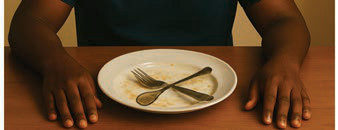
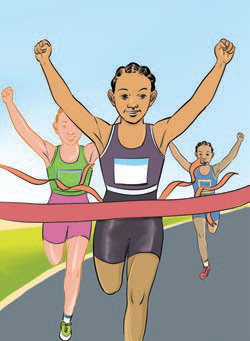

(b) Study the pictures and sentences below them, then say what has happened in Pictures A and B.

1. What has the person in the picture done?
The person in the picture has finished eating.
2. Has the person finished singing?
No, [[blank:item-1]].
The person [[blank:item-2]] eating.
3. Is there any person still eating?
No, [[blank:item-3]].
4. Why do you thing the person in the picture have finished the food in the plate?
I think the person in the picture [[blank:item-4]] the food in the plate because he was hungry.

1. What have the athletes done in the picture?
The athletes have finished the race.
2. Have the athletes finished the race?
Yes, [[blank:item-5]].
The athletes [[blank:item-6]]the race.
3. What have the athletes done in the picture?
They [[blank:item-7]].
4. What has attracted or not attracted you in the picrure?
[[blank:item-8]].